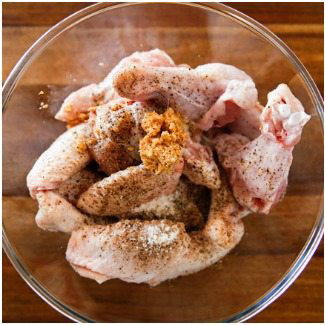

Korean Fried Chicken
Prep Time: 10 min
Cook Time: 30 min
Serving: 4
Main
KOREAN FRIED CHICKEN SAUCE
Directions
1. In a bowl, place the chicken, rice, wine, ginger, salt and black pepper. Combine them well. Then evenly coat the chicken with the starch and set side. (To get the effect like the picture, dip the individual chicken pieces into the bowl of starch, roll the chicken around a bit then take them out and set aside.)
2. In a deep saucepan (or frier) add a generous amount of oil and heat it until the oil temperature reaches 175℃ / 347℉ (or boiling). Start adding the battered chicken carefully and fry them until they cook (between 3 to 5 mins, depending on the size of chicken). Do not overcrowd the pan. (It might be useful to use a grease splatter screen if you have one. It's super handy! It minimises oil splatter.)
3. Take out the done chicken and place them onto some kitchen paper while frying the remaining chicken pieces. Once the first set of deep frying is completed, quickly scoop out any floating debris from the oil using a skimmer. Then deep fry the chicken again when the oil temperature reaches 175℃ / 347℉ (or boiling). Fry them until the batter is golden and crisp. (The second time frying is shorter than the first time, 2 to 3 mins)
4. In a separate saucepan, add in the Korean fried chicken sauce ingredients (listed above). Heat the sauce over low medium heat and stir well. Once it starts bubbling, remove the pan from the heat.
5. Place double fried chicken into a large mixing bowl then pour the fried chicken sauce over the chicken to coat. Mix them lightly and thoroughly. Alternatively, serve the fried chicken and the sauce separately and use the sauce as a dipping sauce.
6. Once all the chicken is coated with the sauce, serve it hot immediately. Leftover chicken can be refrigerated for a day or two and eaten cold. But it won't be as crunchy.